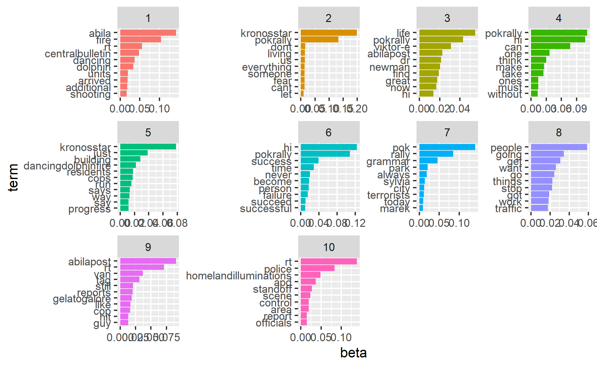

1.Introduction
2.Literature Review
3.Data Preprocessing and Exploratory
3.1 Import packages and social media stream data
packages= c('raster','sf','clock','tmap',
'tidyverse','data.table','lubridate',
'textclean','tm','wordcloud','wordcloud2','text2vec',
'topicmodels','tidytext','textmineR','quanteda',
'BTM','textplot','concaveman','ggwordcloud')
for(p in packages){
if(!require(p,character.only= T)){
install.packages(p)
}
library(p, character.only = T)
}
#read csv file
data_17_1830=read_csv("data/MC3/csv-1700-1830.csv")
data_1830_20=read_csv("data/MC3/csv-1831-2000.csv")
data_20_2130=read_csv("data/MC3/csv-2001-2131.csv")
#append data
data=rbindlist(list(data_17_1830,data_1830_20,data_20_2130))
#print head of data
head(data)
type date(yyyyMMddHHmmss) author
1: mbdata 2.014012e+13 POK
2: mbdata 2.014012e+13 maha_Homeland
3: mbdata 2.014012e+13 Viktor-E
4: mbdata 2.014012e+13 KronosStar
5: mbdata 2.014012e+13 AbilaPost
6: mbdata 2.014012e+13 ourcountryourrights
message
1: Follow us @POK-Kronos
2: Don't miss a moment! Follow our live coverage of the POK Rally in the Park!
3: Come join us in the Park! Music tonight at Abila City Park!
4: POK rally to start in Abila City Park. POK leader Sylvia Marek to open with a speech.<U+0098> #KronosStar
5: POK rally set to take place in Abila City Park - POK leader Sylvia Marek has begun with opening remarks #AbilaPost
6: POK rally in the park tonight! #POKrally
latitude longitude location
1: NA NA <NA>
2: NA NA <NA>
3: NA NA <NA>
4: NA NA <NA>
5: NA NA <NA>
6: NA NA <NA>3.2 Change date type
#timestamp in lubridate
data$timestamp <- ymd_hms(data$`date(yyyyMMddHHmmss)`)
Data Exploratory
•1. Number of post throughout the time period
data$time_1min = cut(data$timestamp, breaks="1 min")
count <- data %>%
group_by(type,time_1min) %>%
summarise(count_of_posts= n_distinct(message))
count$time_1min=ymd_hms(count$time_1min)
#count$time_1min=format(count$time_1min,format = "%H:%M:%S")
ggplot(count,aes(x=time_1min,y=count_of_posts,fill=type))+
geom_bar(stat="identity",position="dodge")+
theme(axis.text.x = element_text(angle = 90, hjust = 1))+
ggtitle("Total Number of Posts through the period")

# A tibble: 5 x 3
# Groups: type [1]
type time_1min count_of_posts
<chr> <dttm> <int>
1 mbdata 2014-01-23 19:43:00 61
2 mbdata 2014-01-23 19:41:00 60
3 mbdata 2014-01-23 19:44:00 48
4 mbdata 2014-01-23 19:45:00 48
5 mbdata 2014-01-23 18:47:00 47With time interval at 1 minute, the number of posts trend is plotted as above. The peaks is observed during time 19:40-19:50. And the posts are also active around time 18:45:00 and 20:10:00.
Text Data Preprocessing
data$cleaned<-
tolower(data$message)%>% # transform all message to lower cases
replace_contraction()%>% #replace contractions with long form
replace_word_elongation()%>% #remove the same letter (case insensitive) appears 3 times consecutively
str_replace_all("[0-9]", "") %>% #removing numbers
str_replace_all("([,=!.?$+%-&#@])","")%>% #remove punctuations
#str_replace_all(c("rt|#hi|#pok|#pokrally|
# #abilapost|#kronosstar|#centralbulletin|@centralbulletin|@kronosstar|rally|aliba"),"")%>% #remove hashtag and rt
removeWords(stopwords("english"))%>%
str_squish()%>% #trim whitespace from a string
str_trim #removes whitespace from start and end of string
head(subset(data,select=c("message","cleaned")))
message
1: Follow us @POK-Kronos
2: Don't miss a moment! Follow our live coverage of the POK Rally in the Park!
3: Come join us in the Park! Music tonight at Abila City Park!
4: POK rally to start in Abila City Park. POK leader Sylvia Marek to open with a speech.<U+0098> #KronosStar
5: POK rally set to take place in Abila City Park - POK leader Sylvia Marek has begun with opening remarks #AbilaPost
6: POK rally in the park tonight! #POKrally
cleaned
1: follow us pok-kronos
2: miss moment follow live coverage pok rally park
3: come join us park music tonight abila city park
4: pok rally start abila city park pok leader sylvia marek open speech<U+0098> kronosstar
5: pok rally set take place abila city park - pok leader sylvia marek begun opening remarks abilapost
6: pok rally park tonight pokrallydata%>% filter(data$cleaned=="")
type date(yyyyMMddHHmmss) author message latitude
1: mbdata 2.014012e+13 AbilaFireDept ? NA
2: mbdata 2.014012e+13 prettyRain it's over!!!! NA
longitude location timestamp time_1min cleaned
1: NA <NA> 2014-01-23 18:50:21 2014-01-23 18:50:00
2: NA <NA> 2014-01-23 21:20:50 2014-01-23 21:20:00 #convert dataframe to corpus
docs <- Corpus(VectorSource(as.character(data$cleaned)))
inspect(docs[1:2])
<<SimpleCorpus>>
Metadata: corpus specific: 1, document level (indexed): 0
Content: documents: 2
[1] follow us pok-kronos
[2] miss moment follow live coverage pok rally park# Create a document-term-matrix
dtm <- TermDocumentMatrix(docs)
matrix <- as.matrix(dtm)
words <- sort(rowSums(matrix),decreasing=TRUE)
# words and frequency dataframe
df <- data.frame(word = names(words),freq=words)
#word cloud
wordcloud(words = df$word, freq = df$freq, min.freq = 5, max.words=200, random.order=FALSE, rot.per=0.35, colors=brewer.pal(8, "Dark2"))

wordcloud2(data=df, size=1.6, color='random-dark')
words_count<-data_subset%>%
unnest_tokens(word, cleaned) %>%
count(time_30min,word, sort = TRUE)
#tf_idf <- words_count %>%
# bind_tf_idf(word,id,n) %>%
# arrange(desc(tf_idf))
#tf_idf %>%
# filter(str_detect(newsgroup,"^sci\\.")) %>%
# group_by(newsgroup) %>%
# slice_max(tf_idf,
# n=12) %>%
# ungroup() %>%
# mutate(word = reorder(word,
# tf_idf)) %>%
# ggplot(aes(tf_idf,
# word,
# fill=newsgroup))+
# geom_col(show.legend = FALSE)+
# facet_wrap(~newsgroup,
# scales="free")+
# labs(x="tf-idf",
# y=NULL)
4.Data Visualization for Challenge Questions
#4.1 Using visual analytics, characterize the different types of content in the dataset. What distinguishes meaningful event reports from typical chatter from junk or spam? Please limit your answer to 8 images and 500 words.
First I will split the data by 30 minutes time interval and perform wordcloud, to derive the most frequent words in the microblog.
data$timestamp <- ymd_hms(data$`date(yyyyMMddHHmmss)`)
data$time_30min = cut(data$timestamp, breaks="30 min")
data$id <- seq.int(nrow(data))
data_subset=subset(data,select=c("time_30min","cleaned"))
usenet_words<-data_subset%>%
group_by(time_30min) %>%
unnest_tokens(word, cleaned) %>%
count(time_30min,word, sort = TRUE)
usenet_words[order(usenet_words$time_30min),]
# A tibble: 8,582 x 3
# Groups: time_30min [10]
time_30min word n
<fct> <chr> <int>
1 2014-01-23 17:00:00 pokrally 192
2 2014-01-23 17:00:00 pok 157
3 2014-01-23 17:00:00 rt 99
4 2014-01-23 17:00:00 rally 96
5 2014-01-23 17:00:00 hi 78
6 2014-01-23 17:00:00 abilapost 76
7 2014-01-23 17:00:00 kronosstar 71
8 2014-01-23 17:00:00 abila 59
9 2014-01-23 17:00:00 people 44
10 2014-01-23 17:00:00 park 41
# ... with 8,572 more rowsset.seed(1234)
usenet_words %>%
filter(n > 5&n<70) %>%
ggplot(aes(label = word,
size = n)) +
geom_text_wordcloud() +
theme_minimal() +
facet_wrap(~time_30min)

Then, to distinguish meaningful events related to meaningful, firstly, I will perform topic modeling to identify the topic in the microblogs.
wordcorpus <- Corpus(VectorSource(as.character(data$cleaned)))
dtm <- DocumentTermMatrix(wordcorpus,
control = list(
wordLengths=c(2, Inf), # limit word length
bounds = list(global = c(1,Inf)), # minimum word frequency
removeNumbers = TRUE, #remove Numbers
weighting = weightTf, #weighted term frequency
encoding = "UTF-8"))
rowTotals <- apply(dtm , 1, sum) #Find the sum of words in each Document
dtm.new <- dtm[rowTotals> 0, ] #remove 0 dtm rows of matrix
topic=LDA(dtm.new,k=10,method="Gibbs",conrol=list(seed=2021,alpha=0.01,iter=200))
Top five words in each topics
terms(topic,5)
Topic 1 Topic 2 Topic 3 Topic 4
[1,] "abila" "kronosstar" "life" "pokrally"
[2,] "fire" "pokrally" "pokrally" "hi"
[3,] "rt" "dont" "viktor-e" "can"
[4,] "centralbulletin" "living" "abilapost" "one"
[5,] "dancing" "us" "dr" "think"
Topic 5 Topic 6 Topic 7 Topic 8 Topic 9
[1,] "kronosstar" "hi" "pok" "people" "abilapost"
[2,] "just" "pokrally" "rally" "going" "rt"
[3,] "building" "success" "grammar" "get" "van"
[4,] "dancingdolphinfire" "time" "park" "want" "tag"
[5,] "residents" "never" "always" "go" "still"
Topic 10
[1,] "rt"
[2,] "police"
[3,] "homelandilluminations"
[4,] "apd"
[5,] "standoff" Extract per-topic-per-word probabilities ,β(“beta”), from the model. The higher the value, the more important of the words to the topic.
ap_topics <- tidy(topic, matrix = "beta")
ap_top_terms <- ap_topics %>%
group_by(topic) %>%
slice_max(beta, n = 10) %>%
ungroup() %>%
arrange(topic, -beta)
ap_top_terms %>%
mutate(term = reorder_within(term, beta, topic)) %>%
ggplot(aes(beta, term, fill = factor(topic))) +
geom_col(show.legend = FALSE) +
facet_wrap(~ topic, scales = "free") +
scale_y_reordered()

As shown above, the meaningful event are in topic 1 - police relatedfire at dancing dolphin,topic 2- hostage & injure, topic 7 - van related, topic 10 police and scene related. While for other key words in the topic, we cann
topic_gamma <- tidy(topic, matrix = "gamma")
topic_gamma <- topic_gamma %>%
group_by(document) %>%
slice(which.max(gamma))
topic_gamma$document<-as.numeric(topic_gamma$document)
topic_gamma[order(topic_gamma$document),]
# A tibble: 4,061 x 3
# Groups: document [4,061]
document topic gamma
<dbl> <int> <dbl>
1 1 2 0.113
2 2 7 0.138
3 3 7 0.153
4 4 7 0.238
5 5 7 0.258
6 6 7 0.145
7 7 3 0.161
8 8 7 0.127
9 9 7 0.190
10 10 7 0.127
# ... with 4,051 more rows#Tokenize data
tidytxtdata<- tidy(dtm)
tidytxtdata <- tidytxtdata%>% #Remove the count column
select(-count)
tidytxtdata <- tidytxtdata%>% #Change the column name 'term' to 'word' so that we can get rid of stopwords later
rename(word = term)
#Remove stopwords
tidytxtdata <- tidytxtdata%>%
anti_join(stop_words)
#Use the btm model
set.seed(321)
model <- BTM(tidytxtdata, k = 20, beta = 0.01, background = TRUE, iter = 500, trace = 100) #Run the model
2021-07-12 11:06:38 Start Gibbs sampling iteration 1/500
2021-07-12 11:06:41 Start Gibbs sampling iteration 101/500
2021-07-12 11:06:43 Start Gibbs sampling iteration 201/500
2021-07-12 11:06:46 Start Gibbs sampling iteration 301/500
2021-07-12 11:06:49 Start Gibbs sampling iteration 401/500topicterms <- terms(model, top_n = 10) #View the topics
topicterms
[[1]]
token probability
1 abilapost 0.0316912457
2 diverted 0.0316912457
3 pokrally 0.0316912457
4 traffic 0.0316912457
5 'em 0.0003137747
6 'n 0.0003137747
7 'river 0.0003137747
8 'rules 0.0003137747
9 's 0.0003137747
10 'song 0.0003137747
[[2]]
token probability
1 dr 0.05719223
2 newman 0.05551791
3 rt 0.04538385
4 lucio 0.03331110
5 stefano 0.03278236
6 jakab 0.03110804
7 di 0.03057931
8 abilapost 0.02731878
9 lorenzo 0.02687817
10 audrey 0.02538009
[[3]]
token probability
1 abila 0.10215517
2 rt 0.07999024
3 fire 0.07334775
4 dancing 0.07306807
5 dolphin 0.06593613
6 intnews 0.02733978
7 internationalnews 0.02216563
8 department 0.02118674
9 apartment 0.02076721
10 centralbulletin 0.01964848
[[4]]
token probability
1 pokrally 0.17579274
2 kronosstar 0.04655289
3 world 0.03001509
4 achieve 0.01776487
5 difference 0.01592733
6 product 0.01551899
7 act 0.01470231
8 stop 0.01327312
9 start 0.01286478
10 real 0.01204809
[[5]]
token probability
1 kronosstar 0.07992810
2 rt 0.05606388
3 dancingdolphinfire 0.04469996
4 afdheroes 0.03939680
5 pokrally 0.03863921
6 afd 0.03201026
7 fresh 0.02727529
8 fire 0.02689650
9 arrived 0.02235093
10 building 0.01988875
[[6]]
token probability
1 pokrally 0.16361362
2 kronosstar 0.12612331
3 life 0.04625265
4 dont 0.02526623
5 living 0.02180245
6 live 0.01721804
7 fail 0.01548615
8 dream 0.01446739
9 fear 0.01446739
10 succeed 0.01375426
[[7]]
token probability
1 pok 0.07377623
2 stop 0.05211264
3 rt 0.03542582
4 abila 0.02752154
5 terror 0.02488678
6 time 0.02430128
7 friendsofkronos 0.02195927
8 terrorists 0.02108101
9 people 0.01961726
10 start 0.01873900
[[8]]
token probability
1 pokrally 0.08013590
2 kronosstar 0.03512118
3 rt 0.03085254
4 remain 0.01998692
5 concert 0.01843469
6 vigilant 0.01843469
7 calmer 0.01804663
8 viktor-e 0.01765858
9 chance 0.01707649
10 crowd 0.01707649
[[9]]
token probability
1 rt 0.07203492
2 abila 0.04767878
3 apd 0.04429338
4 galore 0.02952923
5 abilapost 0.02849480
6 gelato 0.02651998
7 officer 0.02642594
8 police 0.02341669
9 fire 0.02031339
10 gelatogalore 0.01965512
[[10]]
token probability
1 pokrally 0.15179847
2 kronosstar 0.06372141
3 person 0.03156939
4 life 0.02825676
5 people 0.02669787
6 successful 0.02611329
7 time 0.02611329
8 reach 0.02182635
9 recommend 0.02007261
10 motivation 0.01792914
[[11]]
token probability
1 viktor-e 0.07425739
2 rt 0.03756917
3 playing 0.02460747
4 bert 0.02328933
5 song 0.02043336
6 pok 0.02021367
7 speak 0.01560018
8 abila 0.01472142
9 hanns 0.01230483
10 people 0.01230483
[[12]]
token probability
1 pok 0.12958308
2 rally 0.12319040
3 grammar 0.12128987
4 abila 0.02971905
5 tunnel 0.01848867
6 hand 0.01399651
7 badprofileskronos/tacky 0.01278709
8 carpet 0.01244154
9 hurts 0.01244154
10 car 0.01088656
[[13]]
token probability
1 pokrally 0.10936290
2 kronosstar 0.07491142
3 life 0.04772952
4 real 0.04583311
5 child 0.03319036
6 afraid 0.02434044
7 light 0.02276010
8 dark; 0.02212796
9 easily 0.02212796
10 forgive 0.02212796
[[14]]
token probability
1 pokrally 0.15900438
2 success 0.07271706
3 kronosstar 0.06328832
4 failure 0.03614496
5 life 0.02785909
6 progress 0.02000180
7 develop 0.01714460
8 discouragement 0.01714460
9 failures 0.01714460
10 stepping 0.01714460
[[15]]
token probability
1 rt 0.06390576
2 van 0.05641626
3 tag 0.03622718
4 black 0.02393464
5 cop 0.02246930
6 guy 0.01774766
7 cops 0.01766626
8 standoff 0.01685218
9 megaman 0.01652655
10 people 0.01538684
[[16]]
token probability
1 rt 0.10296422
2 fire 0.06204451
3 homelandilluminations 0.05799240
4 police 0.03441042
5 building 0.03049116
6 abilapost 0.02371550
7 control 0.02271907
8 kronosstar 0.02132408
9 additional 0.02046052
10 madeg 0.01913196
[[17]]
token probability
1 rt 0.06795117
2 police 0.06754183
3 ithakis 0.04431189
4 kronosstar 0.04267453
5 alexandrias 0.03878582
6 abila 0.03182707
7 apd 0.02589167
8 hit 0.02568700
9 intersection 0.02057027
10 public 0.02036560
[[18]]
token probability
1 abila 0.05908547
2 pok 0.04860778
3 people 0.03696589
4 credit 0.03463752
5 kronos 0.02445087
6 rt 0.02183144
7 easy 0.02154040
8 badcredit 0.01892097
9 boost 0.01892097
10 fixitkronos/creditratings 0.01892097
[[19]]
token probability
1 pokrally 0.10197724
2 successful 0.05310018
3 energy 0.02954073
4 entrepreneurs 0.02532113
5 givers 0.02532113
6 positive 0.02532113
7 takers 0.02532113
8 trust 0.02356296
9 accept 0.01899173
10 bricks 0.01899173
[[20]]
token probability
1 pok 0.09644836
2 rally 0.07934439
3 rt 0.07003222
4 park 0.04029031
5 abila 0.03525414
6 abilapost 0.03420890
7 police 0.03373379
8 city 0.03116819
9 sylvia 0.02651211
10 presence 0.02366145#4.2 Use visual analytics to represent and evaluate how the level of the risk to the public evolves over the course of the evening. Consider the potential consequences of the situation and the number of people who could be affected. Please limit your answer to 10 images and 1000 words.
data_2<-data %>%
group_by(author) %>%
dplyr::summarise(all_posts=paste(cleaned, collapse=" "))
sotu_firsts_nouns <- PrepText(data_2, groupvar = "author", textvar = "all_posts", node_type = "groups", tokenizer = "tweets", pos = "nouns", remove_stop_words = FALSE, compound_nouns = TRUE)
# <- PrepTextSent(data_2, groupvar = "author", textvar = "cleaned", node_type = "groups",
#tokenizer = "words", sentiment_lexicon = "afinn", language = "english", udmodel_lang = #udmodel_lang, remove_numbers = NULL, compound_nouns = TRUE)
sotu_firsts_network <- CreateTextnet(sotu_firsts_nouns)
#VisTextNet(sotu_firsts_network,label_degree_cut = 0)
VisTextNetD3(sotu_firsts_network)
sotu_firsts_communities <- TextCommunities(sotu_firsts_network)
top_words_modularity_classes <- InterpretText(sotu_firsts_network, sotu_firsts_nouns)
text_centrality <- TextCentrality(sotu_firsts_network)
#4.3 If you were able to send a team of first responders to any single place, where would it be? Provide your rationale. How might your response be different if you had to respond to the events in real time rather than retrospectively? Please limit your answer to 8 images and 500 words